Spotlight + PosterPaper 4
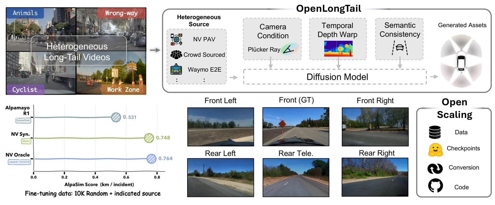
Long-tail data generation
CoRL 2026 Half-Day Workshop
A problem-driven workshop on 4D occupancy, multi-view video, LiDAR, and scenario generation that are useful for planning, control, safety validation, and real autonomous systems.
Accepted contributions announced · 7 Spotlight + Poster · 12 Poster
Workshop award winnersAccepted contributions · CoRL 2026
Seven Spotlight contributions exploring grounded world models, driving decisions, and scene understanding.
All Spotlight acceptances are featured below, in paper-number order. On-site presentation arrangements will be announced separately.

Long-tail data generation
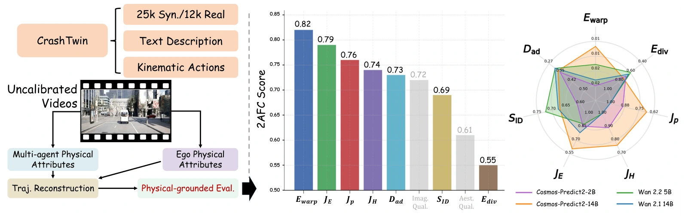
Physics-grounded evaluation
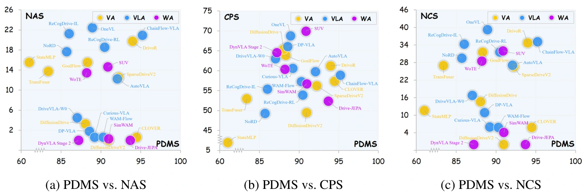
Driving decision-making
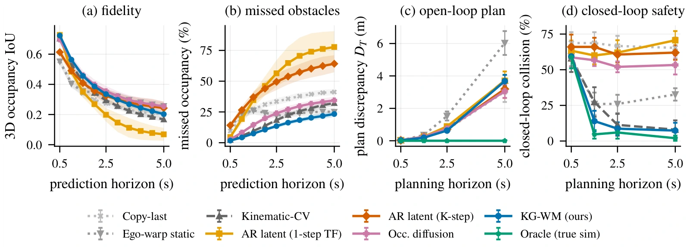
Decision-grounded safety
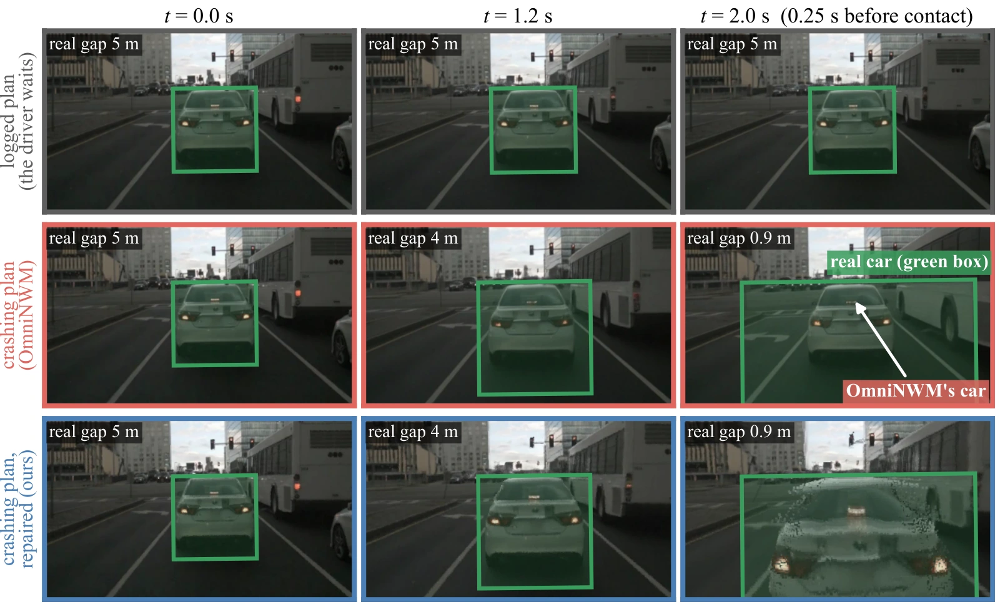
Plan conditioning & interventions
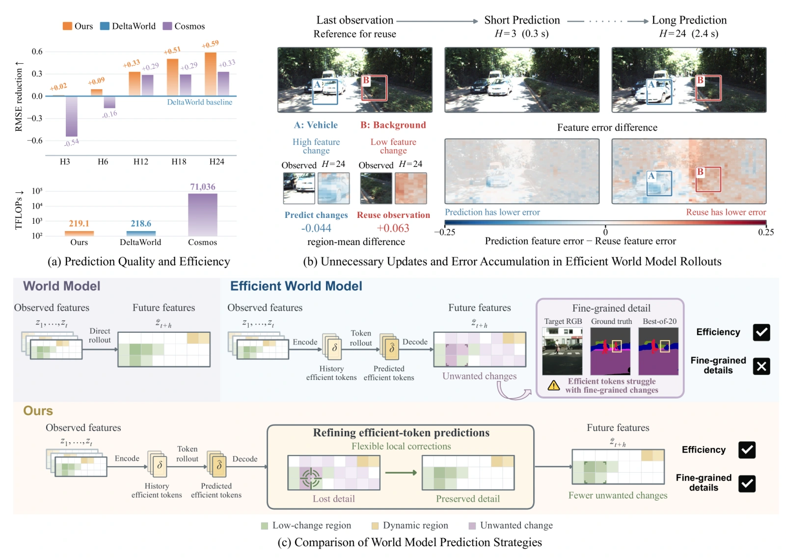
Efficient world modeling
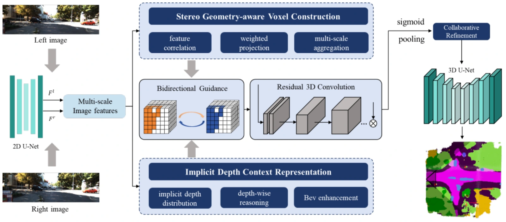
Stereo scene completion
Figures are reproduced from the respective papers with author permission. Titles and authors follow the workshop submission records. OpenReview access may require sign-in; linked public preprints may differ from the workshop versions. This non-archival listing does not publish proceedings or change authors’ PDF visibility preferences.
More accepted contributions
Twelve Poster contributions, alongside the seven Spotlight + Poster works above.
Paper 5 · Poster
Paper 7 · Poster
Paper 8 · Poster
Paper 9 · Poster
Paper 13 · Poster
Paper 14 · Poster
Paper 15 · Poster
Paper 18 · Poster
Paper 19 · Poster
Paper 20 · Poster
Paper 22 · Poster
Paper 23 · Poster
Call for contributions · Submissions closed
We invite anonymous contributions that connect world modeling to autonomous driving decisions: short papers, extended abstracts, benchmark or dataset reports, resource or challenge proposals, position papers, negative results, and early-stage ideas. Contributions may present new results or sharpen the questions, evidence, and shared resources the community needs next.
This is a lightweight, double-blind, non-archival workshop. All accepted contributions will be presented as posters; selected submissions will be invited for short spotlight talks designed to seed panel questions, breakout discussion, and shared community takeaways.
The limit applies to the main text; references and an optional appendix are excluded. Please use the current CoRL 2026 LaTeX template available through the official CoRL 2026 site.
Submissions remain private during review and are assigned manually. Anonymous supporting code, data, video, or project pages are welcome when neither the URL nor its contents reveal author identities.
Every accepted contribution is presented as a poster. Selected papers receive a short spotlight. Authors choose whether the accepted PDF is public on OpenReview or remains private.
Accepted work will not appear in CoRL or PMLR proceedings.
At least one author should attend and present in Austin, or promptly contact the organizers if circumstances change.
Authors explicitly choose public OpenReview release or a private PDF with title, authors, and an author-provided public link listed by the workshop.
New OpenReview profiles without an institutional email may require moderation for up to two weeks; institutional-email profiles are activated automatically.
Workshop awards · Austin 2026
Best Paper Award
Lulin Liu, Nuo Chen, Yan Wang, Bangya Liu, Wenyan Cong, Hezhen Hu, Boris Ivanovic, Hao Wang, Ziyao Zeng, Xinyu Gong, Yang Zhou, Zixiang Xiong, Dilin Wang, Zhangyang Wang, Weisong Shi, Ruohan Zhang, Marco Pavone, Zhiwen Fan
Best Novel Idea Award
Sahil Apage, Medhansh Abhilash
Motivation
Autonomous driving is a real-world robot learning domain where perception, prediction, decision making, control, safety validation, and human interaction meet. 4D multimodal driving world models now generate semantic occupancy, multi-view video, LiDAR, and interactive scenarios, but the field still lacks shared criteria for when a generated world is useful for action.
This workshop asks participants to define and stress-test grounded 4D multimodal world models: models whose scene structure, dynamics, sensor outputs, and evaluations are tied to real autonomous driving decisions.
Occupancy, BEV, object states, video, LiDAR, trajectories, and hybrid state abstractions.
Geometry, semantics, temporal coherence, sensor rigs, and physically plausible interactions.
Planning utility, no at-fault collisions, drivable area compliance, robustness, and failure transfer.
Technical anchors
The workshop is not limited to these systems, but they provide shared examples for participants: occupancy-centric 4D multimodal world modeling and photorealistic adversarial scenario generation.
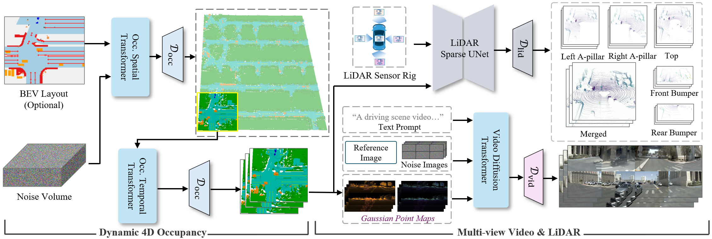
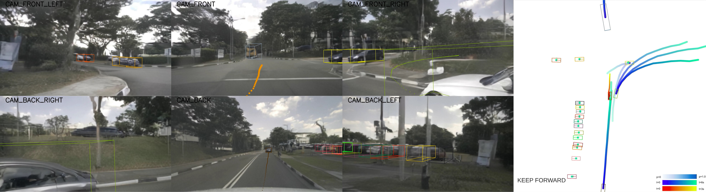
Core challenges
What should a 4D multimodal driving world model predict or generate to support planning and control?
How do generated scenes remain consistent across cameras, LiDAR rigs, maps, and ego motion?
Which metrics should complement FID and FVD when the goal is robust decision making?
How can models generate rare and safety-critical scenarios that are challenging but not impossible?
How should generated data support policy training, audits, monitoring, and sim-to-real validation?
November 12, 2026 · Hilton Austin · Room 410
All times are local to Austin (CST, UTC−6). Each invited talk is 40 minutes, including Q&A.
Introduction to the workshop theme and thanks to our sponsor.
Poster discussion in Room 410 (poster timing tentative).
Presentation of the Best Paper and Best Novel Idea awards.
Starter resources
These resources are intended as optional starting points for workshop contributors. Participants are encouraged to build on them, compare against them, or challenge their assumptions.
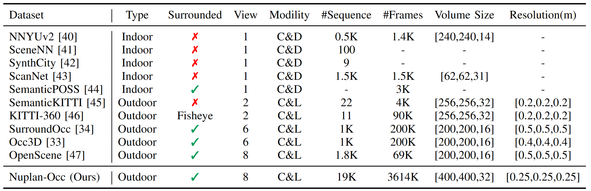
Large-scale semantic occupancy data with released checkpoints for 4D occupancy, video, and LiDAR generation.
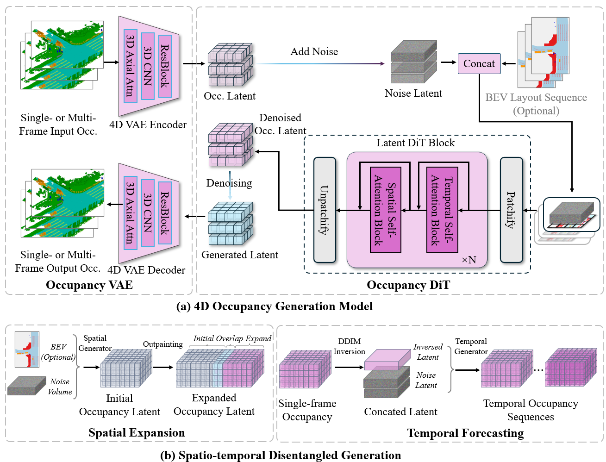
Use this path for spatial expansion, temporal forecasting, and occupancy-centric 4D scene representations.
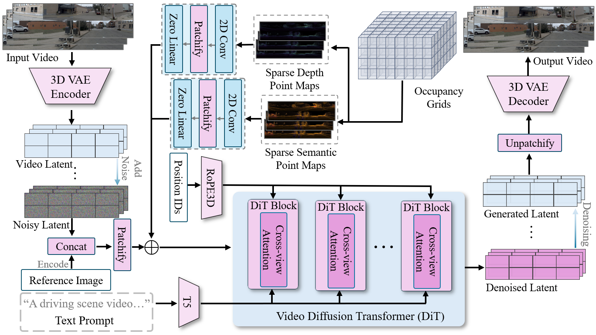
Use occupancy-derived conditions for temporally coherent surround-view video and sensor-specific LiDAR outputs.
Generate physically plausible adversarial maneuvers and evaluate vision-based end-to-end driving models under stress.
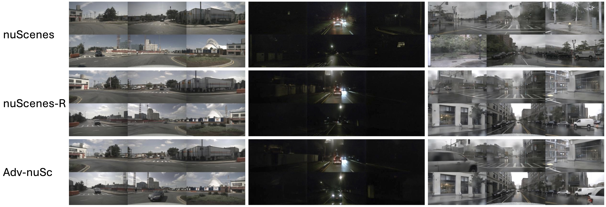
Connect generated data to semantic occupancy prediction and autonomous driving evaluation pipelines.
Submit methods, datasets, benchmarks, negative results, position papers, or resource reports that tie 4D multimodal world models to decisions.
Case study media
Nuplan-Occ supports 4D scene generation, semantic occupancy prediction, and multimodal simulation.
UniSceneV2 treats occupancy as the shared world representation, then renders sensor-level outputs for different datasets and sensor rigs.
Scenario generation can expose rare failure modes in vision-based end-to-end driving systems.
Important dates
The submission deadline is stated in Anywhere on Earth (AoE), with its UTC equivalent shown explicitly. The workshop takes place in Austin local time.
Submission FAQ
See the award winners for the recognized papers. Awards do not change the authors’ PDF-publication preferences.
No. Accepted contributions will not appear in the CoRL or PMLR proceedings. The workshop is designed for timely exchange, constructive feedback, and community discussion.
Yes. We explicitly welcome early-stage ideas, negative results, benchmark or dataset reports, resource or challenge proposals, and position papers, provided they make a clear contribution to the workshop conversation.
Because the workshop is non-archival, concurrent work may be considered, but authors are responsible for complying with every other venue's policies. A submission must not already be accepted to or published at the CoRL 2026 main conference.
No. The submission form asks authors to choose between public release of the accepted PDF on OpenReview and keeping the PDF private while allowing the workshop to list the title, authors, and an author-provided public link.
If accepted, at least one author should attend the workshop in Austin and present the contribution. If circumstances change, authors should contact the organizers promptly; the workshop does not currently promise remote presentation.
Use the optional anonymous-resource field in the submission form. The URL, repository, page content, account names, commit history, and file metadata must not reveal author identities during double-blind review.
Create or update the profile well before the deadline. New profiles without an institutional email may require moderation for up to two weeks, while profiles created with an institutional email are activated automatically.
People
Confirmed speakers and the current organizing team spanning autonomous driving, robot learning, world modeling, simulation, and safety evaluation.
Invited perspectives on world models, autonomous driving, simulation, and safety-critical evaluation.
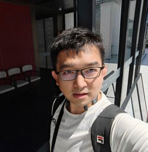
Senior Research Scientist, Autonomous Vehicle Group, NVIDIA Research
wenhaod@nvidia.comWorkshop organization, submissions, resources, and post-workshop artifact coordination.
Shanghai Jiao Tong University and Eastern Institute of Technology
bohan.li77@gmail.com
Post-workshop artifact
The workshop will produce a community whitepaper summarizing evaluation protocols, scenario taxonomies, resource gaps, and research directions proposed by attendees.
Suggested citations
Workshop participants building on the starter resources are encouraged to cite UniScene, UniSceneV2 / Nuplan-Occ, OccScene, OmniNWM, and Challenger as applicable.
@inproceedings{li2025uniscene,
title={UniScene: Unified Occupancy-centric Driving Scene Generation},
author={Li, Bohan and Guo, Jiazhe and Liu, Hongsi and Zou, Yingshuang and Ding, Yikang and Chen, Xiwu and Zhu, Hu and Tan, Feiyang and Zhang, Chi and Wang, Tiancai and others},
booktitle={Proceedings of the Computer Vision and Pattern Recognition Conference},
pages={11971--11981},
year={2025}
}@article{li2026scaling,
title={Scaling Up Occupancy-centric Driving Scene Generation: Dataset and Method},
author={Li, Bohan and Jin, Xin and Zhu, Hu and Liu, Hongsi and Li, Ruikai and Guo, Jiazhe and Cai, Kaiwen and Ma, Chao and Jin, Yueming and Zhao, Hao and others},
journal={IEEE Transactions on Pattern Analysis and Machine Intelligence},
year={2026}
}@article{li2025occscene,
title={OccScene: Semantic occupancy-based cross-task mutual learning for 3D scene generation},
author={Li, Bohan and Jin, Xin and Wang, Jianan and Shi, Yukai and Sun, Yasheng and Wang, Xiaofeng and Ma, Zhuang and Xie, Baao and Ma, Chao and Yang, Xiaokang and others},
journal={IEEE Transactions on Pattern Analysis and Machine Intelligence},
year={2025},
publisher={IEEE}
}@article{li2025omninwm,
title={OmniNWM: Omniscient Driving Navigation World Models},
author={Li, Bohan and Ma, Zhuang and Du, Dalong and Peng, Baorui and Liang, Zhujin and Liu, Zhenqiang and Ma, Chao and Jin, Yueming and Zhao, Hao and Zeng, Wenjun and others},
journal={arXiv preprint arXiv:2510.18313},
year={2025}
}@article{xu2025challenger,
title={Challenger: Affordable Adversarial Driving Video Generation},
author={Xu, Zhiyuan and Li, Bohan and Gao, Huan-ang and Gao, Mingju and Chen, Yong and Liu, Ming and Yan, Chenxu and Zhao, Hang and Feng, Shuo and Zhao, Hao},
journal={arXiv preprint arXiv:2505.15880},
year={2025}
}